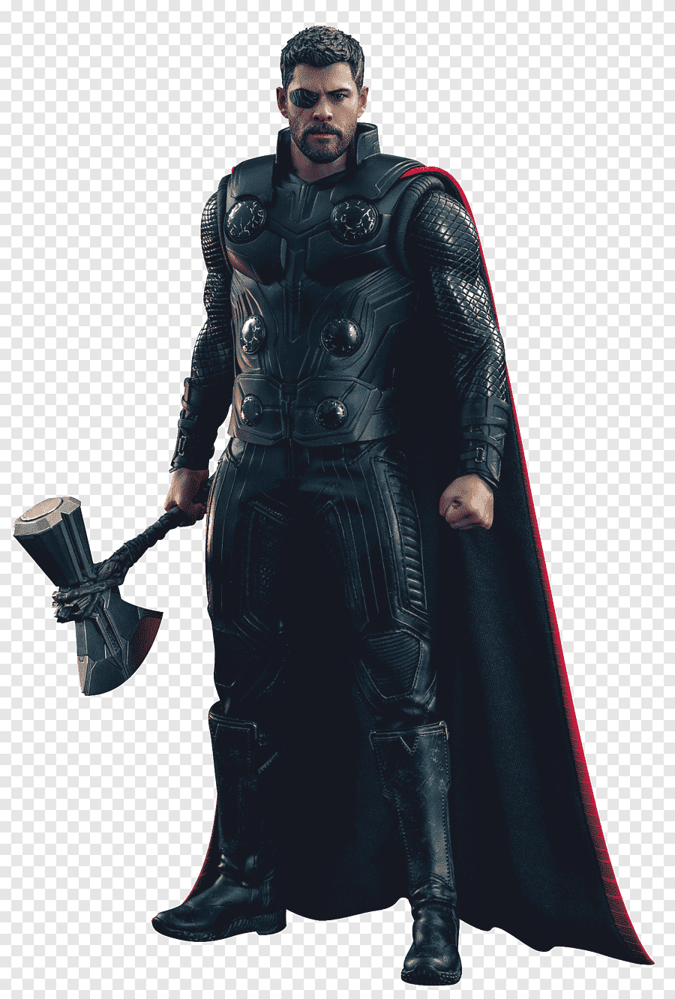

Thor is a 2011 American superhero film based on the Marvel Comics character of the same name. Produced by Marvel Studios and distributed by Paramount Pictures,[a] it is the fourth film in the Marvel Cinematic Universe (MCU). It was directed by Kenneth Branagh, written by the writing team of Ashley Edward Miller and Zack Stentz along with Don Payne, and stars Chris Hemsworth as the title character alongside Natalie Portman, Tom Hiddleston, Stellan Skarsgård, Kat Dennings, Clark Gregg, Colm Feore, Ray Stevenson, Idris Elba, Jaimie Alexander, Rene Russo, and Anthony Hopkins. After reigniting a dormant war, Thor is banished from Asgard to Earth, stripped of his powers and his hammer Mjölnir. As his brother Loki (Hiddleston) plots to take the Asgardian throne, Thor must prove himself worthy.
